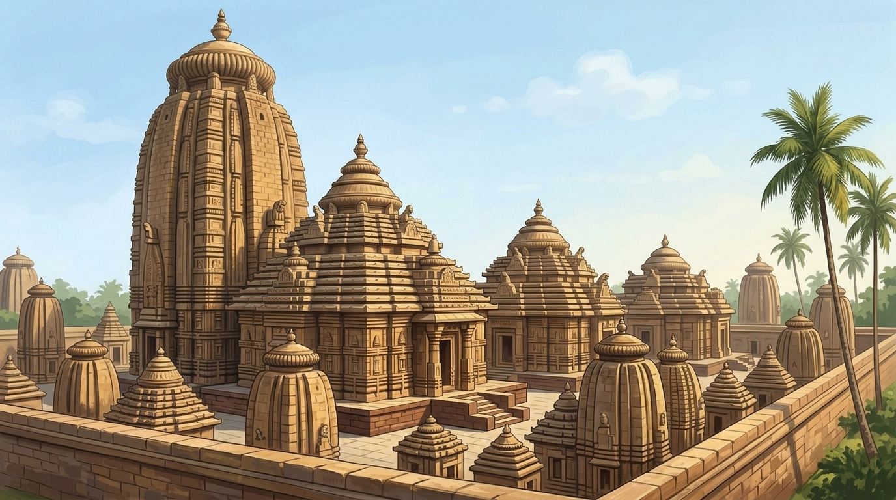
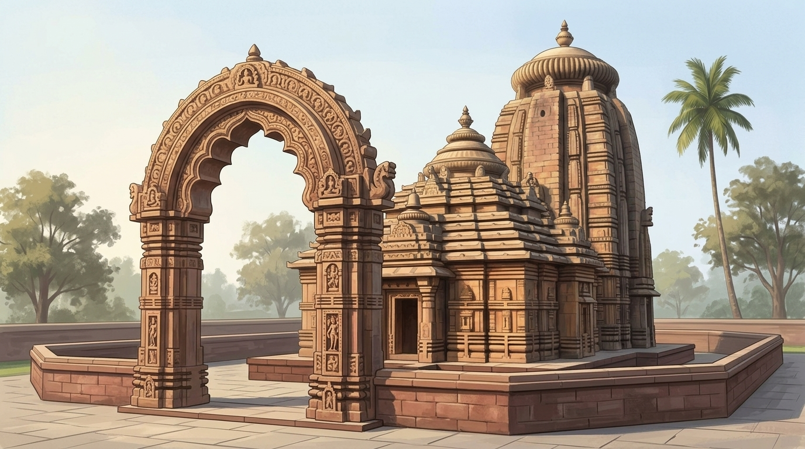
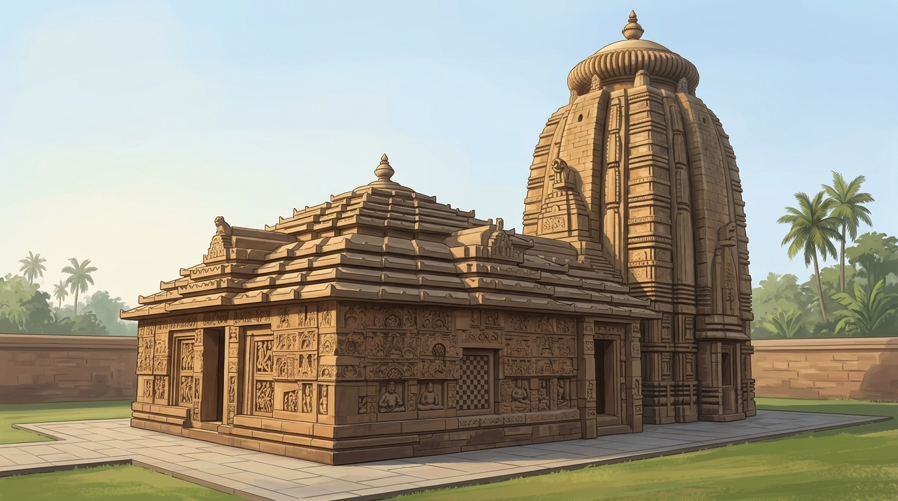

Kalinga Sthapatyaକଳିଙ୍ଗ ସ୍ଥାପତ୍ୟ
Explore centuries of stone, symmetry, and the sacred
The Evolution Story
-
Before the temples
c. 2nd–1st century BCEFor curious grown-ups
Percy Brown: the Orissan caves were cut within about 150 years before the Common Era; he reads a mean date of about 160 BCE from the Hathigumpha inscription.
-
The early temples
c. 750–900 CE (Brown); earlier per PanigrahiFor curious grown-ups
Panigrahi places the Parasuramesvara group in the Shailodbhava period, which by his tentative chronology ended in the second half of the 8th century CE. Brown dates Parasuramesvara towards the end of the 8th century CE and his Early period to c. 750–900 CE.
-
A new polish
c. 900–1100 CE -
Towers and halls
c. 1000–1100 CEFor curious grown-ups
Percy Brown: Lingaraja c. 1000 CE; Jagannath about 1100 CE, 'not consecrated until' 1118 CE, and linked to 'Chora Ganga, the conqueror of Kalinga in 1030'. K. C. Panigrahi: Chodaganga's rule in Odisha is shown by a Lingaraja inscription of 1114 CE. Dates rest on style and later records.
-
The chariot of the Sun
13th century CE (c. 1250 CE) -
Later temples
15th–16th century CEFor curious grown-ups
Panigrahi gives Kapilendra's accession as 1435 CE on one page and his reign as 1433–1467 CE on another.
Explore Odisha

Lingaraja Temple Bhubaneswar

Mukteshvara Temple Bhubaneswar

Parasuramesvara Temple Bhubaneswar

Jagannath Temple, Puri Puri
Featured Temple
Konark Sun Temple
A 13th-century CE temple to Surya, the Sun god, built in stone as a giant chariot with 24 wheels and seven horses.
For curious grown-ups
ASI and Mitra (ASI) say seven horses; UNESCO's short summary page says six.
Sources & evidence
- Established: old records (inscriptions, digs, ASI/UNESCO) say so, and experts agree. Established: old records (inscriptions, digs, ASI/UNESCO) say so, and experts agree.
- Scholarly view: experts' best reading of the clues. Scholarly view: experts' best reading of the clues.
- Debated: sources disagree, or it rests on tradition. Debated: sources disagree, or it rests on tradition.
- Percy Brown. Indian Architecture (Buddhist and Hindu Periods), D.B. Taraporevala Sons & Co., Bombay (1959). https://archive.org/details/dli.csl.8666 (full text, archived copy)
- Krishna Chandra Panigrahi. Archaeological Remains at Bhubaneswar, Orient Longmans, Bombay (1961). https://archive.org/details/in.ernet.dli.2015.111041 (full text, archived copy)
- UNESCO. Sun Temple, Konârak, UNESCO, Paris (n.d.). https://www.unesco.org/en/articles/sun-temple-konarak
- Archaeological Survey of India. Sun Temple, Konarak (1984), Odisha, Archaeological Survey of India, New Delhi (n.d.). https://asi.nic.in/pages/WorldHeritageKonarak
- Debala Mitra. Konarak, Archaeological Survey of India, New Delhi (2003 (first published 1968)). https://archive.org/details/konarak00mitr (full text, archived copy)